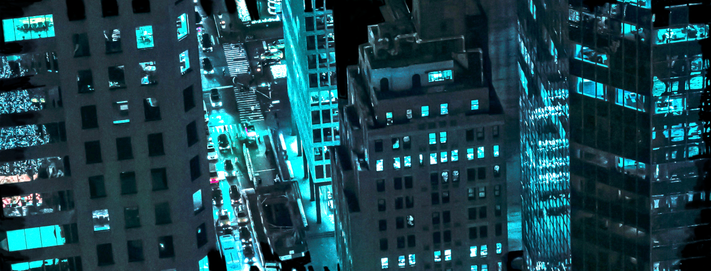
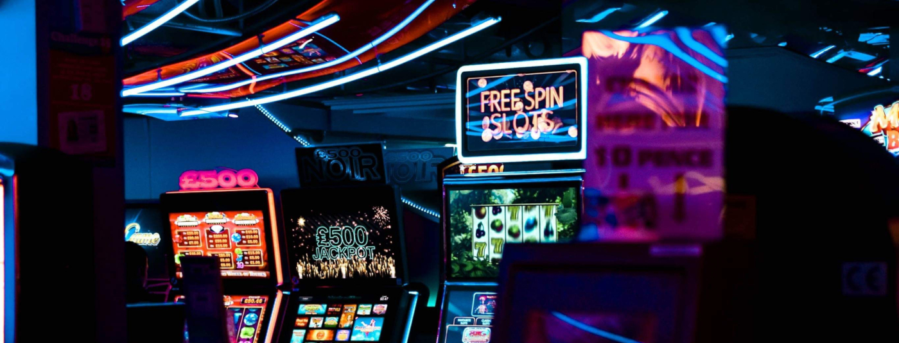

|
STASIA.IO - Web Remote Desktop Application Grid
Core of the system is the Clientless Remote Desktop System, working transparently with any internet browsers without any plugins, and it's the most advanced alternative to existing remote desktop solutions on the market. Web Remote Desktop Application Grid, is implemented completely from scratch. It is different from RDP, has a brand new invented protocol, and the server itself has a unique utilization of modern multithreading. The engine has been used in the enterprise solution being an extensive Data Management System with strong focusing on secure document isolation. Another use of the engine is in a much more reliable, for entertainment system dedicated to gaming and media streaming. In a natural way, the system supports also social distancing as a utilization virtual machine remotely. |
Performance comparison between Microsoft RDP and STASIA.IO. |
|
FOR ENTERPRISE SOLUTIONS Venture |
FOR ENTERTAINMENT SOLUTIONS Leasure |
2021 - Property of Robert T. Palka [rtpxff] |